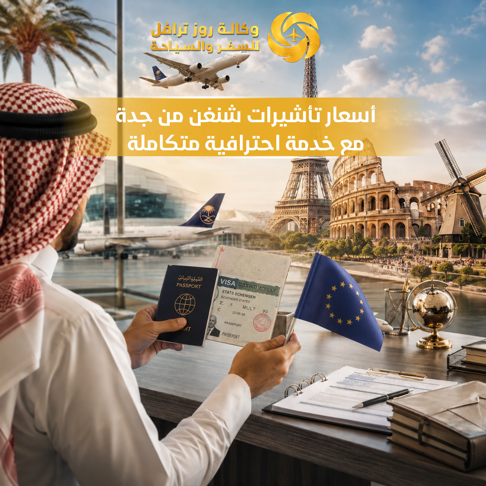

وكالة روز للسفر والسياحة – حجز موعد فيزا شنغن من جدة – طلب فيزا شنغن من جدة – تقديم فيزا شنغن اون لاين – نموذج طلب فيزا شنغن – حجز موعد فيزا تركيا جدة – استخراج فيزا شنغن من جدة – مكتب استخراج فيزا شنغن – تأشيرة شنغن من جدة – أسعار تأشيرات شنغن – مكتب تأشيرات أوروبا بجدة – فيزا أوروبا من جدة – حجز فنادق وتأشيرات – حجز طيران وفنادق وتأشيرات
أوروبا ودول الشنغن
تنسيق المواعيد
مراجعة المستندات
طيران وفنادق
تعد تأشيرة شنغن من أكثر التأشيرات طلبًا بين المسافرين من المملكة العربية السعودية، حيث تتيح لحاملها السفر إلى أكثر من 26 دولة أوروبية بتأشيرة واحدة فقط، مما يجعلها الخيار المثالي للراغبين في السياحة أو حضور الفعاليات أو زيارة الأقارب أو استكشاف أشهر الوجهات الأوروبية. ولهذا يبحث الكثير من العملاء عن أسعار تأشيرات شنغن من جدة مع خدمة احترافية متكاملة تضمن تجهيز الملف بالشكل الصحيح وتسهيل جميع الإجراءات المتعلقة بالسفر من خلال خدماتنا المتكاملة.
وقد نجحت وكالة روز للسفر والسياحة في تقديم خدمات متخصصة في استخراج تأشيرات شنغن للمسافرين من جدة، من خلال فريق يمتلك خبرة واسعة في تجهيز الملفات ومراجعة المستندات ومتابعة الطلبات وتقديم الدعم الكامل للعملاء منذ بداية الإجراءات وحتى استلام التأشيرة من خلال طلب التأشيرة.

إذا كنت تبحث عن حجز موعد فيزا شنغن أو ترغب في تقديم طلب فيزا شنغن بطريقة احترافية أو تحتاج إلى المساعدة في تجهيز نموذج طلب فيزا شنغن، فإن وكالة روز للسفر والسياحة توفر لك جميع الخدمات اللازمة ضمن باقة متكاملة تساعدك على إنجاز الإجراءات بسهولة واحترافية.
تقدم وكالة روز للسفر والسياحة مجموعة واسعة من خدمات التأشيرات والسفر، وتعتبر من الجهات المميزة في جدة التي توفر خدمات متكاملة للراغبين في السفر إلى أوروبا.
وتساعد هذه الخدمات على رفع مستوى التنظيم وتقليل الأخطاء التي قد تؤثر على ملف التأشيرة. يمكنكم التعرف على تكلفة استخراج تأشيرة شنغن من جدة في 2026.
توفر وكالة روز للسفر والسياحة خدمات متخصصة لاستخراج التأشيرات، وتشمل:
تختلف أسعار تأشيرات شنغن من جدة وفق مجموعة من العوامل المختلفة، ومنها:
ولهذا تحرص وكالة روز للسفر والسياحة على تقديم أسعار تنافسية وخيارات متعددة تناسب احتياجات مختلف العملاء مع توفير خدمة احترافية متكاملة. يمكنكم الاطلاع على تكلفة استخراج تأشيرة شنغن من جدة.
يعتبر حجز موعد فيزا شنغن من أهم الخطوات الأساسية قبل التقديم على التأشيرة. وتوفر وكالة روز للسفر والسياحة المساعدة في:
وتساعد هذه الخدمات على توفير الوقت وتقليل احتمالية حدوث أخطاء أثناء عملية التقديم. تعرف على طلب فيزا شنغن عاجل من جدة.
يعد تجهيز الملف بشكل احترافي من أهم العوامل التي تساهم في تقديم طلب قوي ومنظم. ولهذا تساعد وكالة روز للسفر والسياحة العملاء في:
وتتم جميع هذه الخطوات وفق متطلبات الجهات المختصة. يمكنكم الاطلاع على الأخطاء الشائعة في تجهيز أوراق السفر لتجنبها.
مع تطور الخدمات الإلكترونية أصبح الكثير من المسافرين يبحثون عن معلومات تتعلق بـ تقديم فيزا شنغن اون لاين والإجراءات المرتبطة بها.
وتوفر وكالة روز للسفر والسياحة الدعم اللازم للعملاء فيما يتعلق بالإجراءات الإلكترونية وإعداد البيانات المطلوبة وتجهيز المستندات بشكل صحيح قبل استكمال باقي مراحل التقديم.
يعتبر نموذج طلب فيزا شنغن من أهم المستندات المطلوبة ضمن ملف التأشيرة. ولهذا تساعد وكالة روز للسفر والسياحة العملاء في:
وتساهم هذه المراجعة الدقيقة في تقليل الأخطاء التي قد تؤثر على الطلب.
لا تقتصر خدمات وكالة روز للسفر والسياحة على التأشيرات فقط، بل تشمل أيضًا:
مما يجعل العميل يحصل على جميع خدمات السفر من جهة واحدة. تعرف على كيفية اختيار شركة السفر المناسبة.
يمكن لحامل تأشيرة شنغن زيارة العديد من الوجهات الأوروبية الشهيرة، ومنها:
وتعد هذه الوجهات من أكثر الدول طلبًا لدى المسافرين من جدة. استكشف أفضل الوجهات السياحية لعام 2026.
هناك العديد من الأسباب التي تجعل وكالة روز للسفر والسياحة من الخيارات المفضلة لدى المسافرين:
يمكنكم الاطلاع على أفضل وكالة سفر في جدة من خلال مدونتنا.
تختلف مدة المعالجة بحسب الدولة الأوروبية ونوع الطلب والفترة الزمنية التي يتم التقديم خلالها.
نعم، تسمح تأشيرة شنغن بالتنقل بين دول منطقة الشنغن وفق الأنظمة المعمول بها.
نعم، توفر وكالة روز خدمات حجز الطيران والفنادق ضمن باقات متكاملة أو بشكل منفصل.
نعم، تقدم وكالة روز للسفر والسياحة المساعدة في مراجعة وتجهيز نموذج الطلب وجميع المستندات المطلوبة.
يمكنك الاتصال على 0502113147 أو زيارة صفحة الاتصال، فريقنا يرد على مدار الساعة.
إذا كنت تبحث عن أسعار تأشيرات شنغن من جدة مع خدمة احترافية متكاملة، فإن وكالة روز للسفر والسياحة توفر لك الدعم الكامل في جميع مراحل التقديم، بدءًا من تجهيز الملف وحجز المواعيد وحتى استكمال ترتيبات السفر وحجوزات الفنادق والطيران، بما يضمن لك تجربة أكثر سهولة واحترافية.
تواصل مع فريق وكالة روز للسفر والسياحة اليوم اتصال أو وتساب / 0502113147 واحصل على استشارة متخصصة تساعدك في اختيار الوجهة المناسبة وإتمام جميع إجراءات السفر بسهولة وسرعة، لتستمتع بتجربة سفر مريحة ومميزة من البداية وحتى الوصول.
اتصل بنا الآنتصفح خدماتنا الشاملة: جميع خدماتنا | من نحن | مدونتنا | طلب التأشيرة | حجز الطيران | حجز الفنادق | برامج سياحية